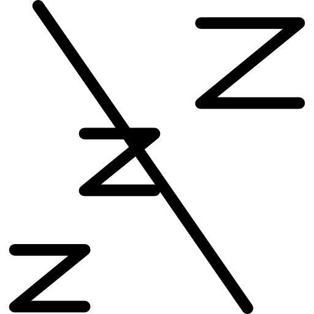
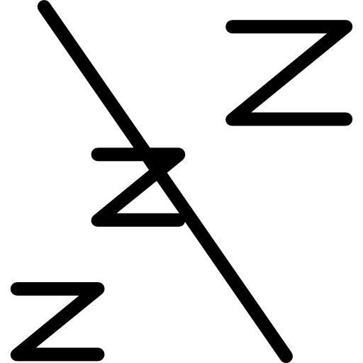
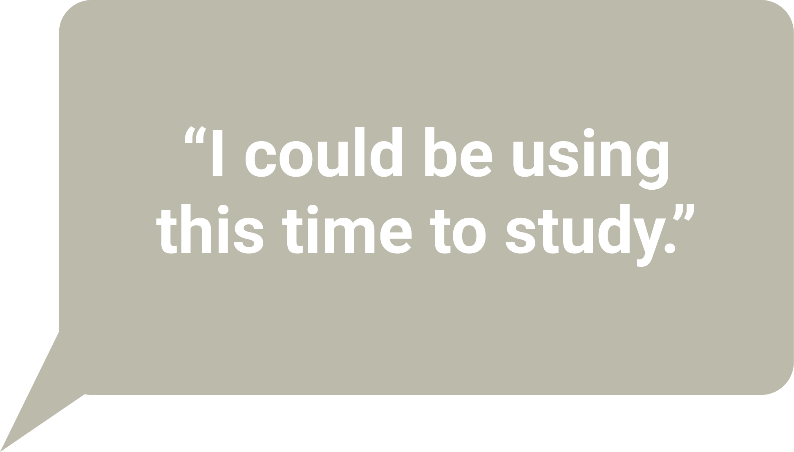

Have a seat and some coffee, let's chat for a bit.

Everyone feels a sense of anxiety. Some of this anxiety is short-term, some long-term. Maybe it's due to an upcoming doctor's appointment, an exam, or the current pandemic. On the flip side, maybe you have no clue on why you're feeling anxious.

 


1) Self care is now a business, and spending money on things that aren't a necessity is either not feasible or leaves us with guilt.
2) We feel guilty for investing time into theirselves when they could be using that time on more “productive” things.
